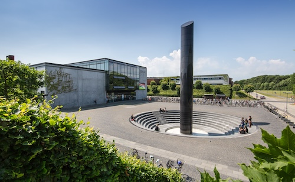
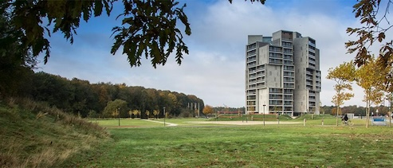

Reversible Computation (RC)
July 3 - July 4, 2025, Odense, Denmark
Venue

RC 2025 will take place in Odense, Denmark, one of the oldest cities in Denmark, and home to about 190.000 inhabitants (of which approximately 21.000 are university students) in the heart of the island of Funen.
Odense is reachable via train (approximately 4 hours from Hamburg Hbf),
via plane to Copenhagen Airport (approximately 1 hour 40 minutes to Odense via direct train from the airport), or by car (European route E20).
The conference will take place on the Odense campus of the University of Southern Denmark, easily reachable by light-rail service from Odense city centre, which offers a wide variety of opportunities for both lodging and dining.
Venue
The conference will take place in the Skyroom, a conference room located in the penthouse of Campus Hall with a panoramic view of Odense and surrounding areas. Campus Hall is a modern student dormitory completed in 2015 situated on campus. Getting to Campus Hall from the city centre is most easily done either by bicycle, or by light-rail from the city centre, getting off at the station Cortex Park. The address is
Campus Kollegiet
Campusvej 1
5230 Odense M
Accommodation
Odense offers a variety of accommodation options for budgets of all sizes. Many of these are placed in the historic city center, from which the university campus is most easily accessed by light-rail (see above). Some hotels that were recommended by locals include- Hotel Odeon
- Comwell H.C. Andersen Odense
- First Hotel Grand Odense
- Milling Hotel Plaza, Windsor, and Ansgar
Abstract submission:
February 21st, 2025 AOE
Submission deadline:
February 28th, 2025 AOE
Notification to authors:
April 11th, 2025 AOE
Final version:
May 1st, 2025 AOE
Conference:
July 3rd - July 4th, 2025
Robin Kaarsgaard
University of Southern Denmark
Odense, Denmark
Sponsors: